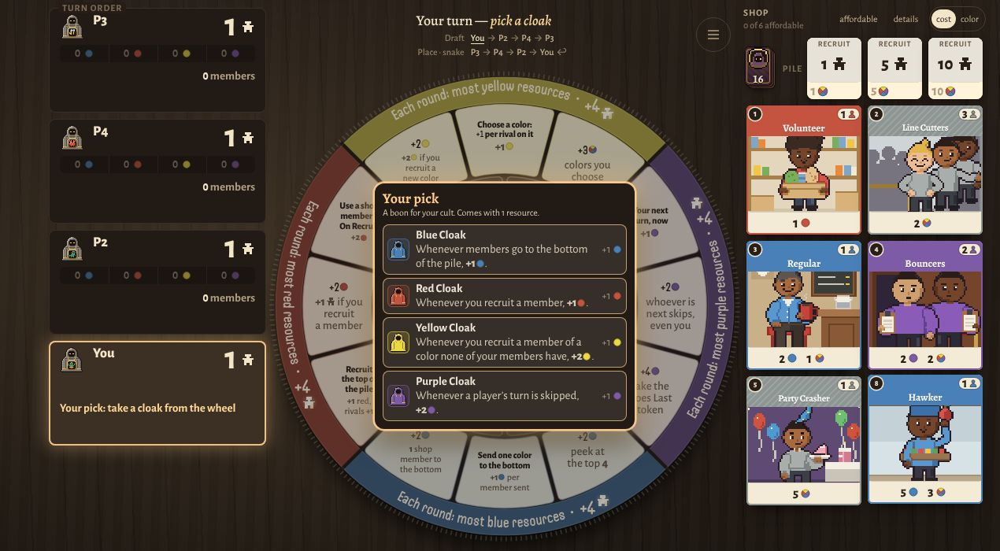
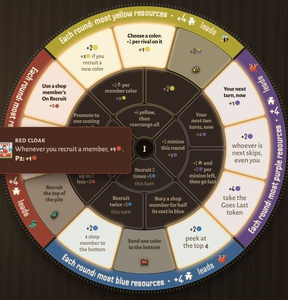
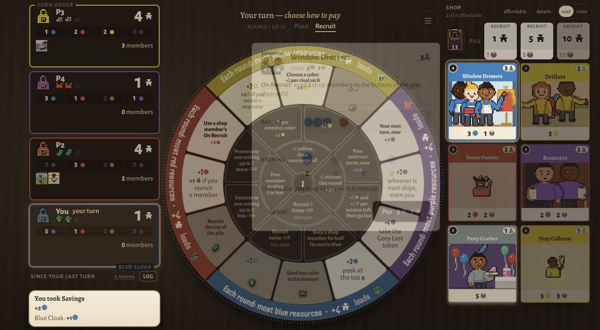
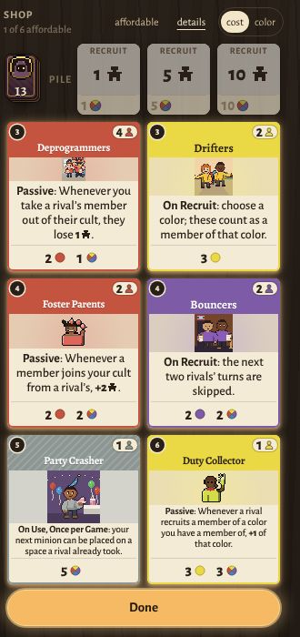
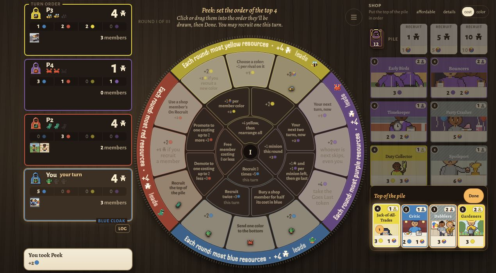

Cults — How to play
Lead a cult for three rounds. Send minions to the wheel for resources, recruit members, and win contests. Most followers after round III wins. 2 to 6 players. Point at anything in the game for its full rule.

What you have
- Followers are your score. You start with 1. Each member is worth 1 follower, or the number beside its member mark.
- Minions are your workers: 3 in round I, 4 in round II, 5 in round III.
- Resources come in the colors in play, one resource per color. A dot split into the table's colors means any resources, colors your choice.
- Members are cards you recruit from the shop. Most have an ability.
Setup
Turn order is drawn. Then, from last player to first, each picks a cloak: a boon all game plus 1 resource of its color. The first player gets the one left.
The wheel
Each color in play has six spaces on the wheel. The outer ring opens in round I, the middle in round II, the center in round III. A space holds one minion per round. The rim shows that color's contest and who leads it.

Your turn
- Place a minion on an open space and take what it gives.
- Recruit one thing, or pass: a member from the shop, paying its cost, or followers, paying 1, 5 or 10 resources of any colors for that many.
Use your members' abilities any time on your turn. "Once per round" comes back each round; "once per game" is used up, but the member still counts.

Turn order
Turns snake: 1-2-3-4, 4-3-2-1, 1-2-3-4, one minion each, until all are placed. From round II, fewest followers goes first.
The shop
The deck has 10 members per color plus 12 grey. 6 show in round I, 7 in round II, 8 in round III; gaps refill from the pile. Pricier members join the pile in round II. Members that leave play (the old row between rounds, members cast out or sent away) go face up on the discard pile beside the deck, so everyone can see what's out. When the pile runs out, shuffle the discard pile into a new pile. A cost's colored part must be that color; the rest is any color. Grey members cost any color. Where a card says "a color none of your members have", grey counts as a color.

Round end
- Round-end abilities happen.
- Each contest is scored in turn. The leader gets +4 followers in round I, +6 in round II, +10 in round III. Tied leaders each get half, rounded up. In a "most" contest you need at least 1 of what's counted.
- Minions come home and the shop deals a fresh row.
Game end
After round III, add game-end bonuses. Most followers wins; a tie goes to more members.

The colors
- Red recruits: free members, swaps with shop and rival members.
- Blue bends the shop: extra recruits, burying members, a look at the pile.
- Green copies spaces: a rival's, or your own again.
- Purple bends turns: go twice in a row, skip turns, +1 minion.
- Magenta steals resources and members.
- White turns what you have into followers.
- Yellow goes broad: picks its colors, changes rivals' resources.
- Silver gives rivals gifts that pay you back.
Fine print
- To recruit is to bring in a member or followers by your own doing. Each follower purchase is one recruit. A member a rival moves to you isn't your recruit.
- To copy an action is to get its own printed gain, the amount on its chip. The taker's member bonuses are not copied. A copied steal, swap or gift is done again. Copying a copy lets you choose again, but never an action already in that chain.
- To steal is to take from a rival. The followers a rival's members are worth can't be stolen; their other followers can. Nothing drops below 0.
- A skipped turn is placed later in the same round; nobody loses a minion. +1 minion never happens in round I.
- Swapping members with a rival is a trade, not a steal.
- Round down unless a card says otherwise.
Playing online
The host taps Host online game and shares the link. Lost your connection? Open the same link. Something wrong? Menu, Copy game record, send it to Cory.
Glossary
- Followers
- Your score. You start with 1 (yourself); members add what they are worth, and you gain more from contests, recruiting followers and abilities. Most followers after round III wins.
- Member
- A card you recruit. It counts as 1 member, or the number its card shows beside the member mark, and is worth that many followers. Bonus followers never add members. Most cards have an ability.
- Full set
- One resource of each color on the table. Holding 2 of every color is 2 full sets; your fewest color sets how many you have. On: Seamstress, Jack-of-All-Trades.
- +1 minion
- One more minion this round, to place and recruit with. The card says when you place it; otherwise it goes after everyone else. Never in round I; later only while a space would still be free. On: Overtime, Extra Hand.
- In a row
- Your own next turn comes up now, so you place twice in a row. No new minion: you place the same minions, just sooner. On: Right Away, Crunch Time, Hot Streak.
- Skip
- A skipped turn is passed over: play goes on to the next turn, and the skipped player places that minion later in the same round. Nobody loses a turn or a minion. A skip never carries into the next round: with no turn left this round, nothing is skipped. On: Hold Up, Gossip.
- Cast out
- Send one of your own members to the discard pile. It leaves your cult. On: Farewell, Estate Sale, Downsizers.
- Leaves your cult
- Any way a member stops being yours: you cast it out, a rival steals it, or a swap takes it away. On: Martyrs.
- Turn into followers
- Trade resources or members for followers with a White space or member (Exchange, Cash In, Farewell…). Recruiting followers in your recruit step is not turning. On: Exchange, Cash In, Cashier.
- Copy
- Copy an action: get its own printed gain (what its chip shows). Members’ bonuses on it don’t repeat; a steal, swap or gift is done again. Its taker keeps what they got. Copying a copy lets you choose again; never choose an action already in that chain. Each green action gives +1 green, including when copied. Agents stops rivals from copying its owner’s actions. Echo copies the previous action, Cover an action with no minion on it, and Reprise one with your minion. Greatest Hits and Sample copy On Recruits: Greatest Hits each of your members’, Sample a rival member’s. On: Echo, Sample, Greatest Hits, Stunt Double.
- Discard pile
- Members that leave play go face up on the discard pile, beside the deck, so everyone can see what’s out. When the deck runs out, the discard pile is shuffled into a new deck. On: Savings, Out of Style, Bury, Patroness, Window Shopper, Window Dressers and 5 more.
- Pile
- The face-down deck the shop refills from. Members that leave play go to the discard pile instead; when the deck runs out, the discard pile is shuffled into a new deck. The market also refreshes between rounds. On: Walk-In, Peek.
- Once per round
- Usable one time each round; it comes back when the next round starts. On: Panel, Guest of Honor, Debt Collectors, Counterfeiters, Downsizers, Song Request and 2 more.
- Once per game
- Usable one time in the whole game, at any point on your own turn. On: Hot Streak, Godparent, Debutantes, Ballroom Dancers, Seamstress, Heist Crew and 5 more.
- Round start
- When a round begins, before anyone places a minion. On: Body Snatchers, Seat Filler, Tourist, Dyer, Caravan, Window Shopper and 2 more.
- Round end
- After the round’s last minion is placed. Round-end abilities happen first, then each color’s contest is scored. On: Mob, Night Managers, Kingmakers, Night Traders, Last-Minute Shopper, Second-Story Man and 3 more.
- Game end
- After round III is scored. Game-end bonuses are added, then the most followers wins (ties: more members). On: Patriarch, Timekeeper, Patron Saints, Big Tent, Snobs, Misers and 1 more.
- On recruit
- Happens when the member joins your cult by your own doing, paid or free: recruit, take or swap (your own red action). Being given a member does not trigger it, and a rival moving it into your cult doesn’t either. On: Tryout, Mentor, Latecomers, Tourist, Dyer, Caravan and 15 more.
- Recruit
- Bring a member or followers into your cult by your own doing: recruit or take a member (paid or free), swap one in with your own red action, or recruit followers (each follower purchase is one recruit). A member a rival moves into your cult isn’t your recruit. On: Proselytizers, Recruiter, Matchmaker, Guest Book, Power Shoppers, Trendsetters and 1 more.
- Rival
- Any other player.
- Steal
- Take resources or a member from a rival. Stolen resources keep their colors. Lie Low stops steals and Poach on you until round end (swaps still go through); some members stop steals too. On: Help Yourself, Lie Low, Heist, Shake Down, Accomplice, Second-Story Man and 10 more.
- Grey
- A grey member has no color of its own. Its whole cost is paid in any colors. Its member quantity still counts, but never toward a color, and it brings nothing to cards that pay “its color”. On: Bargain Bin, Impressionist.
- Any (cost)
- “Any” in a cost or a gain: resources of any colors, your choice.
- Contest
- Each color’s round-end rule. Whoever leads it when the round ends gains +4 / +6 / +10 followers in rounds I / II / III; tied leaders each gain half the prize, rounded up. You need at least 1 of what it counts. On: Night Traders, Mannequin, Second-Story Man, Cheerleaders, Spoilsport, Sore Loser.
- Snake order
- Turns go first to last, then last to first, and so on, one minion each turn (3 / 4 / 5 minions in rounds I / II / III). Fewest followers picks first from round II.
Same rules as "How to play" in the game's menu.